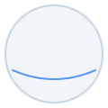
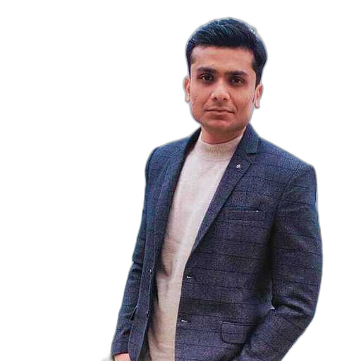

Assets


Header mock

No gradient app icon. Your photo is the mark; typography carries leadership positioning. Subtle slate ring + optional accent arc (can remove). Matches “principal engineer / consulting” tone.


assets/headshot.png → public/avatar.png (optimize WebP optional).